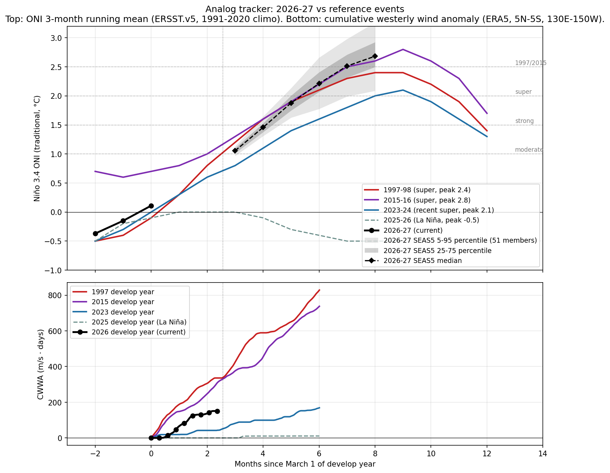

Internal use.
Target peak season: DJF 2026-27. CPC's longest-lead strength bin is NDJ 2026-27, used as the proxy for the DJF peak.
Peak Niño 3.4 (traditional ONI), DJF 2026-27 / NDJ 2026-27. Headline numbers below are CPC-derived after translating from RONI bins to traditional ONI thresholds, then fitting a skew-normal distribution to the nine bin probabilities and evaluating its survival function at each threshold. RONI-to-traditional-ONI offset is +0.50°C, the live tropical-mean SST anomaly observed for the week of 2026-05-06 (CPC). ECMWF SEAS5 member counts in caveat 2 are a second quantitative cross-check.
Headline values use the v1.5 smoothed estimator: CPC anchor (monthly cadence) plus a bounded weekly deflection from the SEAS5 ensemble (weight 0.2, capped at ±10 ppt per bucket per week). The anchor and deflection are shown alongside the smoothed value where they differ. See methodology.html for the full rule.
Source-by-source check (qualitative where strength bins aren't broken out):
Caveats this issue:
| Indicator | Current (week of ~22 Apr 2026) | 1997 same week | 2015 same week |
|---|---|---|---|
| Niño 3.4 weekly (traditional) | +0.9°C | -0.1°C | +0.6°C |
| Niño 3.4 weekly (RONI) | +0.4°C | n/a (pre-RONI) | n/a (pre-RONI) |
| 0-300m heat content anomaly | +2.24°C (CPC monthly, 180W-100W, vs 1981-2010 climo) | +0.7°C | +1.6°C |
| Cumulative westerly wind anomaly since Mar 1 | 151 m/s·days (CWWA, ERA5 130E-150W, vs 1991-2020 climo) | 336 | 309 |
Heat content note: Above-average and rising. Qualitatively the warmest since Jun 2023; comparable to spring of 2015, well short of spring 1997. New downwelling Kelvin wave initiated in March 2026.
CWWA note: Live ERA5 daily 850 hPa zonal wind through 2026-05-12, area-meaned over 5N-5S, 130E-150W and integrated for positive (westerly) anomalies vs the 1991-2020 same-calendar-day climatology. At the same calendar date, 2026 CWWA (151) tracks closest to 2023 (43); other reference years: 1997 (336), 2015 (309), 2025 (0). Caveat: CWWA is a cumulative-area-mean metric and systematically understates transient localized westerly wind bursts, including those occurring just outside the 5N-5S band. A short intense burst can generate a downwelling Kelvin wave that does substantial physical work even when it barely moves the cumulative integral. For the operational read on whether ENSO development is on track, the surfacing-Kelvin-wave evidence in heat content (above) is at least as informative as this metric. See the WWB row below for the spatial-peak event count and analyst read (v1.7, complementary to CWWA).
WWB events (spatial-peak detection, v1.7): 5 westerly wind burst events detected since Mar 1, 2026. Detection: sliding 5x10 deg sub-region area-mean anomaly over 10N-10S, 130E-150W; dual threshold (5 m/s sustained for at least 5 days, peak day above 7 m/s) with peak-detection plus a 10-day recovery interval between events. Analogs (events to same calendar date): 1997 (6), 2015 (7), 2023 (6), 2025 (3). - 2026-03-01 to 2026-03-08, 8 days, peak 13.0 m/s, peak day 2026-03-02 - 2026-03-09 to 2026-03-22, 14 days, peak 18.38 m/s, peak day 2026-03-14 - 2026-03-23 to 2026-04-06, 15 days, peak 17.38 m/s, peak day 2026-03-31 - 2026-04-07 to 2026-04-22, 16 days, peak 23.85 m/s, peak day 2026-04-12 - 2026-05-01 to 2026-05-08, 8 days, peak 9.86 m/s, peak day 2026-05-02
Analyst read on WWB row (v1.7).
Peak amplitude is the primary signal in this row, not the count. 2026's strongest burst to date peaks at 23.9 m/s (peak day 2026-04-12). Full-season peaks for the analog years: 1997: 27.7 m/s, 2015: 29.5 m/s, 2023: 19.0 m/s, 2025: 12.7 m/s.
This lands in super-event territory: 2026's first burst is comparable in magnitude to 1997 and 2015 first bursts, well above what 2023 (sub-event El Niño) and 2025 (neutral / La Niña) produced. Peak amplitude is the strongest quantitative evidence to date that 2026's forcing is structurally aligned with the super-event analogs rather than the weaker recent analogs.
On count: 2026 has 5 events so far; analogs at the same calendar date: 1997 (6), 2015 (7), 2023 (6), 2025 (3). v1.7's peak-detection algorithm with a 10-day recovery interval splits sustained westerly periods into distinct bursts where v1.6 collapsed them. The count is now reasonably comparable across years, but peak amplitude remains the cleaner single number.

Three reference El Niño events (1997-98, 2015-16, 2023-24) vs current 2026-27 trajectory in 3-month-running-mean ONI. Common reference is March 1 of develop year.
Read this week: at the JFM tick (month -1 since Mar 1), 2026 sits at -0.4°C, very close to where 1997 was (-0.4°C) and 2023 was (-0.3°C) at the same calendar point. Both went on to become super events. 2015 was already running ahead at +0.6°C in JFM. The takeaway is that JFM position is a weak discriminator; the ramp speed through MAM-AMJ is what matters, and we won't see that until the next 1-2 ONI updates.
Caveat: the analog plot uses 3-month running mean ONI. The current weekly Niño 3.4 (+0.5°C trad, week of Apr 15) is not directly plotted because it's not a 3-month mean. Adding a weekly trajectory to this chart is on the V1.5 list.
Aggregation of institutional impact ranges for the developing event. Probabilities below are from named external sources, conditional on the headline strong-to-super case in section 1 materializing.
Spain, Portugal, Italy, Greece, southern France. Probability of severe summer 2026 heat and drought: high, >70% Iberia, ~65% Italy/Greece/southern France. The 2024 July Mediterranean heatwave was characterized by World Weather Attribution as "virtually impossible without human-caused climate change". A 2003-magnitude European heat event (~70,000 excess deaths) is rated medium probability (~25-30%) on a strong El Niño compounded with the multi-year Mediterranean drought baseline.
Probability of major drought 2026: high (>70%); probability of fire season exceeding 2024 hotspot levels: medium-high (~50%). NASA SERVIR characterized the 2023-24 drought magnitude as "roughly double" the 2015-16 event. The 2024 fire season produced a 76% increase in hotspots vs 2023.
Probability of severe bushfire season austral summer 2026-27: high (>65%); GBR mass bleaching: very high (>85%); agricultural drought: high (>70%). The reef has bleached six times since 2016; another super event makes a sixth-in-eight-years bleaching baseline. Australian winter wheat is the cleanest El Niño short on record, with declines of 16% to 46% under prior strong events (1965, 1977, 1982, 1994, 1997, 2023).
Probability of major drought repeat: ~70% if rains arrive late, per OCHA framing of the 2023-24 baseline ("worst impacts in 40 years"). Probability of a humanitarian appeal exceeding $5 billion: medium-high (~50%). Six SADC countries declared emergency in 2024; back-to-back is the asymmetric humanitarian risk.
IMD's April 2026 monsoon outlook is 92% of the long-period average, the first below-normal April call since 2015. Of 16 historical El Niño years since 1950, 7 produced below-normal Indian monsoons (IMD MMCFS). Pre-monsoon heat already reached 43.8°C at Akola in mid-April 2026.
California atmospheric river season: above-normal Pacific storm count winter 2026-27 high (~70%), with ~50% probability of a major atmospheric river damage event January-March 2027. Pacific Northwest: warmer-drier winter (~70%) with significant 2026 fire season (~50%). Atlantic hurricane season: high probability (~70%) of below-normal activity from El Niño wind shear, partially offset by warm Atlantic SSTs (2023 produced 20 named storms despite an El Niño base state). Southern Plains drought relief: low-medium (~25-30%); the 2023-24 super event underdelivered there.
Significant drought in Indonesia: high (>70%); palm oil production decline: medium-high (~55%). The 2015-16 super event delivered a 13.2% Malaysian palm oil production decline at a 12-month lag. Vietnamese coffee output fell 20% in 2023-24.
The 2023-25 fourth global bleaching event already affects ~84% of world reefs (International Coral Reef Initiative, April 2025). Continued mass bleaching across all tropical basins is essentially certain into 2026-27.
New agency releases since last issue:
Unchanged since last issue: iri, ecmwf, bom.
Physical state: no numerical changes from last issue. (Either truly unchanged or weekly update has not been ingested.)
AUTO-GENERATED: the prose below is written by Claude from this week's diff and physical state. Review before quoting externally; edit freely if the analysis warrants it.
(Fallback prose: API call failed. Falling back to mechanical summary of the diff. Replace before quoting.)
This week's brief was generated without analyst commentary because the editorial generator could not reach the Anthropic API. The auto-diff above is the floor; please read it directly and add interpretation manually for any week where the deltas matter materially.
Generated by run_brief.py from sources.py + probs.py + analog.py. Methodology version 1.7. RONI offset +0.50°C (live, week of 2026-05-06). Next issue: Mon 4 May 2026 (per Monday cadence; first batch run is off-schedule).